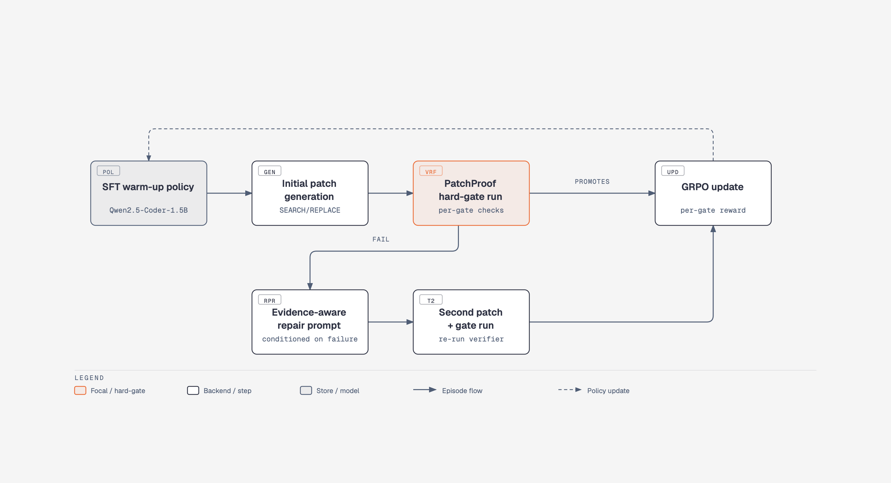
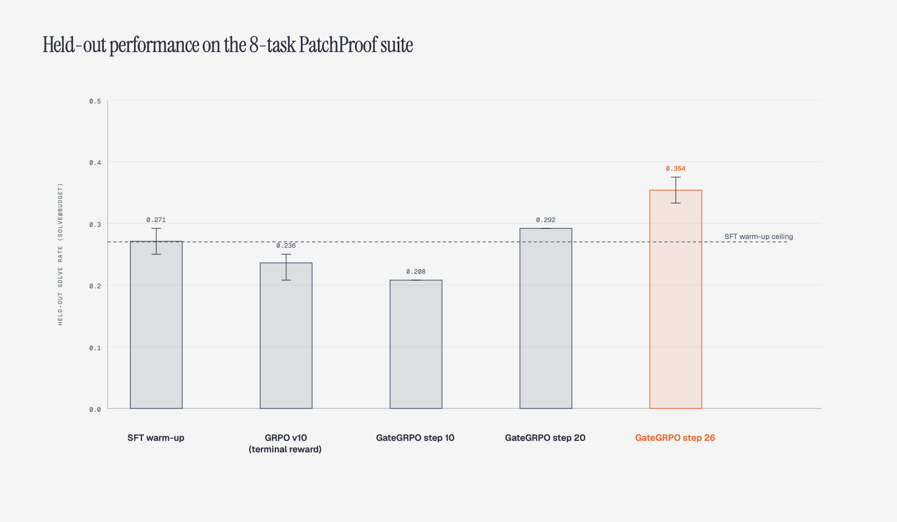
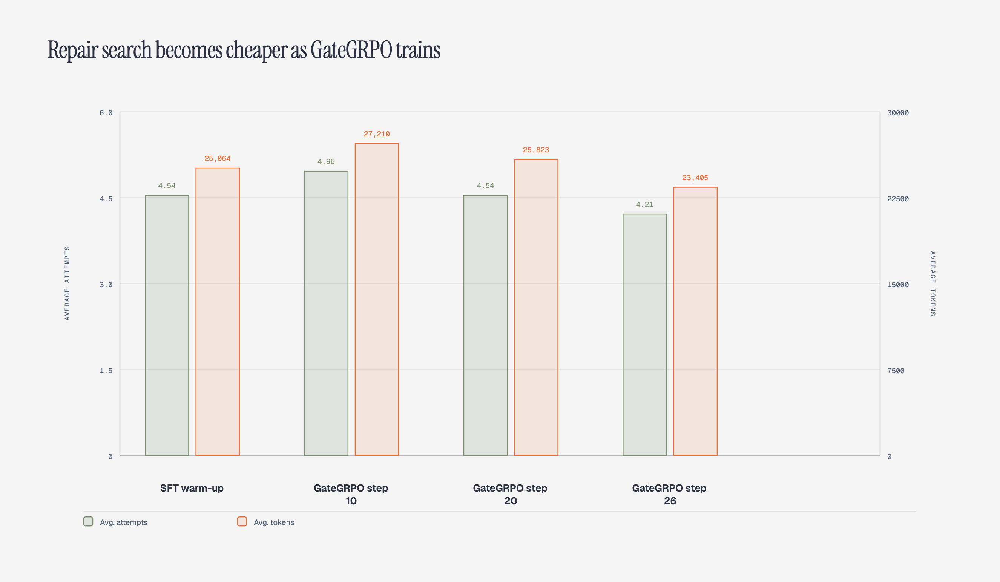

We introduce GateGRPO, a reinforcement learning (RL) method for code repair that uses a deterministic hard-gate verifier as the reward source instead of a learned reward model. Standard single-shot GRPO applied to PatchProof (which is a multi-turn repair harness) collapsed to near-zero reward variance because the training objective did not match the multi-turn repair loop used at evaluation time. We fixed the rollout mismatch, then fixed a second reward-myopia problem by replacing a terminal win-or-lose reward with per-turn, per-gate partial credit. The resulting GateGRPO final checkpoint reproducibly sits above the SFT-only baseline on an 8-task held-out suite. The gains are narrow but real, and the largest practical benefit is not the absolute solve rate but the reduction in search cost which means fewer attempts and fewer tokens are needed to reach a verified patch.
Language models trained to repair code need a source of reward. The common approach is to train a reward model or collect preference pairs, but both are expensive and both can drift away from the underlying correctness we actually care about here. Hard-gate verifiers avoid this drift. A gate verifier runs concrete tests, parser checks, security scans and other deterministic predicates. It emits a reproducible pass-or-fail signal.
The gap is that the signal is sparse. Either a patch promotes through every gate and solves the task, or it stops at a gate and gives the model almost no gradient. We hit this wall with our earlier PatchProof work where the verifier gives a single terminal reward, and a 1.5B model can generate a clean-looking patch that still fails on a visible test. The policy learns nothing about which specific gate it just missed.
This project asks whether we can train a code-repair policy with GRPO using only the verifier's existing per-gate outputs, without ever constructing a learned reward model?
Our starting point was the PatchProof repair-search harness and the DarwinPatch budgeted search controller. Together they provide:
SEARCH/REPLACE patch generation and parsing.We trained an SFT warm-up on 26 non-held-out tasks. That model, named as SFT v9, reached 0.25 to 0.29 on the held-out suite in repeated runs. The goal of the RL stage was to improve on that SFT-only bar.
GateGRPO keeps the verifier fixed and treats its per-gate outputs as a dense reward signal. We implement it in three pieces: (1). a multi-turn rollout that mirrors the search harness, (2). a hard-gate reward that sums partial credit across turns, (3). and a GRPO update on the initial generation.
The standard GRPO trainer calls the reward function once per prompt. PatchProof, however, evaluates a sequence of attempts. The same policy that produces a syntactically valid patch on turn one often fails a visible test, and a second attempt, conditioned on the failure evidence, is what creates the solve. A single-shot reward therefore measures the wrong object.
We replaced the static reward callback with a custom rollout_func that runs the full two-turn
PatchProof search for every training prompt:
SEARCH/REPLACE block.Each episode returns the final verified state, the reward and the token counts from both turns.
A conventional reward would use the episode outcome: 1 if the patch promotes, 0
otherwise. The problem with this binary label is that two different failures, say a scope-guard miss and a
visible-test miss, get the same score. The model cannot learn which part of the repair to adjust.
GateGRPO uses the verifier's existing per-gate scores. For each turn we compute:
partial = w_scope + w_apply + w_ast + w_secret + w_visiblewhere each w is a fixed weight tied to a real gate. A promotion adds a large terminal bonus. The
episode reward is the sum of the first-turn partial credit and the second-turn partial credit. This keeps the
gradient alive across the whole search instead of collapsing to a single bit.
We use TRL's GRPO implementation with the per-episode reward. The policy is updated on the initial rollout; the second turn provides a denser reward signal but does not generate its own policy gradient. This is a deliberate simplification: the first generation is the action, the two-turn search is the evaluation of that action. We train for one epoch on the 26 training prompts with checkpoints saved every ten steps.

All experiments start from the same SFT v9 (the base warm-up) checkpoint and use the same frozen held-out suite. Each held-out run uses three repetitions per task, giving 24 independent episodes. The small suite size is intentional for this experiment, but it means the results should be read as a promising direction, not a definitive benchmark.
max(turn1,
turn2) reward.| Model | Held-out solve rate | Solves / 24 | Avg. attempts | Avg. tokens |
|---|---|---|---|---|
| SFT v9 | 0.25 to 0.2917 | 6 to 7 / 24 | 4.54 to 4.75 | 25,064 to 26,528 |
| GRPO v10 (terminal reward) | 0.2083 to 0.25 | 5 to 6 / 24 | 4.75 to 4.96 | 26,761 to 28,082 |
| GateGRPO step 10 | 0.2083 | 5 / 24 | 4.96 | 27,210 |
| GateGRPO step 20 | 0.2917 | 7 / 24 | 4.54 | 25,823 |
| GateGRPO step 26 | 0.333 to 0.375 | 8 to 9 / 24 | 4.21 to 4.42 | 23,405 to 23,824 |
The SFT v9 range comes from the original held-out run and a rerun. The GRPO v10 range comes from three
independent held-out runs on the same terminal-reward checkpoint. The GateGRPO step 26 range comes from two
independent held-out runs on the final per-gate-reward checkpoint. The point estimates favor GateGRPO and the
ranges mostly separate from the SFT v9 range, but n = 24 does not give strong statistical power.
This is a reproducible, narrow gain rather than a proven effect size. The practical signal is stronger when we
also look at search cost.

The GateGRPO checkpoints reduce both the number of repair attempts and the number of generated tokens needed to solve a task. SFT v9 and GateGRPO step 10 both average around 4.8 attempts and 27,000 tokens. By step 26 the policy averages 4.2 attempts and 23,400 tokens. In other words, the solve rate rises while the search becomes cheaper. This cost reduction is an independent line of evidence that the dense reward is shaping the policy toward faster repairs, not just a few lucky successes.

The final result is more useful because the path to it was failure-driven. We record the negative results as carefully as the positive ones.
patch_applies.max(turn1, turn2) reward to summed per-gate partial credit did the policy improve on held-out
tasks.
This chain is the main contribution. It shows that the hard-gate verifier can act as a reward source, but only if the training loop matches the search loop and only if the reward encodes which gate failed.
The held-out suite has only eight tasks. A one-solve swing is 0.04 on solve@budget, so the
difference between 0.29 and 0.33 should not be overstated. The result is better described as a controlled,
reproducible direction than as a large, general and huge improvement.
We also did not tune the gate weights or explore alternatives to GRPO. The partial-credit weights are the same ones we used for diagnostics. A different weighting, or a learned value baseline, could widen or narrow the gap.
Finally, the policy is still only 1.5B parameters. Larger base models, longer training and harder held-out tasks are the natural next steps. The current result is the v1 checkpoint against which those larger experiments should be compared.
Because this prototype was trained on a small contrainted GPU with a limited token and compute budget, I kept the held-out suite to eight tasks and one training epoch and did not scale the base model, the task suite, or the search budget. Therefore, if you have the resources, an open position, or a project you want to collaborate on, I am open to both work and collaboration. Please reach out at taneemishere@gmail.com.
GateGRPO replaces a learned reward model with a deterministic hard-gate verifier and trains a code-repair policy through multi-turn, partial-credit rollouts. On an 8-task held-out suite the final GateGRPO checkpoint is reproducibly above the SFT-only starting point and uses fewer attempts per solve. The gain is modest, but the methodical chain of failures that led to it, multi-shot rollout mismatch then reward myopia, makes it a credible and debuggable result. The next step is to treat this as a baseline and try to beat it with the same held-out suite.